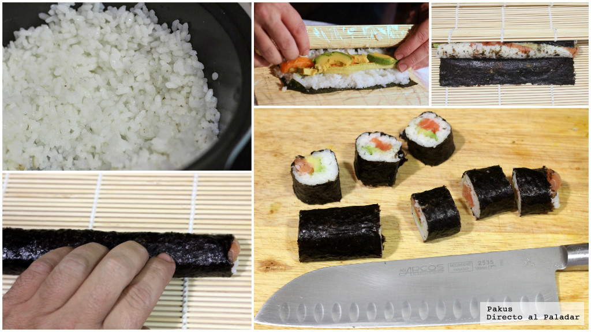

Receta fácil de sushi

Maki -pequeños cilindros de alga nori rellenos de arroz y el ingrediente elegido- con salmón, aguacate y pepino,
Como es un plato que resulta caro si lo pedimos fuera de casa y es muy importante consumirlo bien fresco, hoy os queremos enseñar esta receta fácil de sushi, para que podáis hacerlo cuando queráis.
Ingredients
- Arroz para Sushi (100 g)
- Alga nori
- Salmón fresco (50 g)
- Aguacate
- Pepino
- Vinagre
- Azúcar
- Sal
Instructions
- Comenzamos preparando el arroz. Como ya os explicamos aquí, hacer arroz para sushi es un proceso sencillo. Basta con cocer el arroz (tipo glutinoso o especial para sushi) y después enfriarlo con un abanico tras aliñarlo con vinagre, azúcar y sal.
- Es conveniente tener todos los ingredientes listos a la hora de preparar el sushi, ya que deben ser productos muy frescos y no conviene perder tiempo en su manipulación. Por eso, prepararemos una juliana de aguacate y haremos lo mismo con el pepino para tenerlo listo cuando vayamos a formar los makis.
- En cuanto al pescado a utilizar, en este caso cortamos el salmón eligiendo la zona de la ventresca para darle unos cortes en tiras. Aquí podéis ver perfectamente cómo hacerlo. Con todo listo, cortamos la hoja de alga nori en dos, la ponemos sobre una esterilla o makisu forrada de film transparente de cocina dejando el lado rugoso arriba, y sobre ella extendemos el arroz presionando un poco para que se adhiera.
- En el centro del arroz, colocamos las tiras de pescado, el pepino y el aguacate y opcionalmente, un poco de wasabi, si nos gusta el toque picante de este condimento. Ya solo falta enrollar el alga ayudados con la esterilla y formar un cilindro. A la hora de servirlo hay que cortarlo en 8 porciones, ayudados de un cuchillo humedecido para que no se nos quede pegado el arroz.